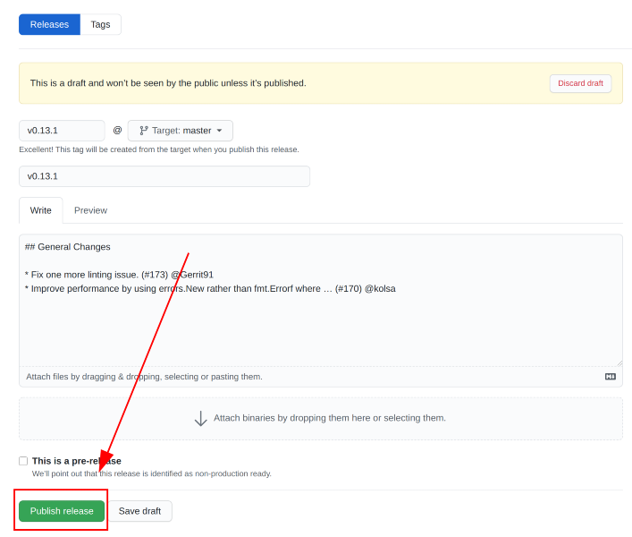

Releases
The metal-stack contains of many microservices that depend on each other. The automated release flow is there to ensure that all components work together flawlessly for every metal-stack release.
Releases and integration tests are published through our release repository. You can also find the release notes for this metal-stack version in there. The release notes contain information about new features, upgrade paths and bug fixes.
If you want, you can sign up at our Slack channel where we are announcing every new release. Often, we provide additional information for metal-stack administrators and adopters at this place, too.
This document is intended for developers, especially maintainers of metal-stack projects.
Release Flow
The following diagram attempts to describe our current release flow:

A release is created in the following way:
- Individual repository maintainers within the metal-stack Github Org can publish a release of their component.
- This release is automatically pushed to the
developbranch of the release repository by the metal-robot. - The push triggers a small release integration test through the mini-lab.
- To contribute components that are not directly part of the release vector, a pull request must be made against the
developbranch of the release repository. Release maintainers may push directly to thedevelopbranch. - The release maintainers can
/freezethedevelopbranch, effectively stopping the metal-robot from pushing component releases to this branch. - The
developbranch is tagged by a release maintainer with a-rc.xsuffix to create a release candidate. - The release candidate must pass a large integration test suite on a real environment, which is currently run by FI-TS. It tests the entire machine provisioning engine including the integration with Gardener, the deployment, metal-images and Kubernetes conformance tests.
- If the integration tests pass, the PR of the
developbranch must be approved by at least two release maintainers. - A release is created via Github releases, including all release notes, with a tag on the
mainbranch.
FAQ
Question: I need PR #xyz to go into the release, why did you not include it?
Answer: It's not on purpose if we miss a PR to be included into a metal-stack release. Please use the pending pull request from develop into master as soon as it is open and comment which pull request you want to have included into the release. Also consider attending our planning meetings or contact us in our Slack channel if you have urgent requirements that need to be dealt with.
Question: Who is responsible for the releases? Who can freeze a release?
Answer: Every repository in metal-stack has a CODEOWNERS file pointing to a maintainer team. This is also true for the releases repository. Only release repository maintainers are allowed to /freeze a release (meaning the metal-robot does not automatically append new component releases to the release vector anymore).
Question: I can't push to the develop branch of this repository? How can I request changes to the release vector?
Answer: Most changes are automatically integrated by the metal-robot. For manually managed components, please raise a pull request against the develop branch. Only release maintainers are allowed to push to develop as otherwise it would be possible to mess up the release pipeline.
Question: What requirements need to be fulfilled to add a repository to the release vector?
Please see the section below named Requirements for Release Vector Repositories.
Requirements for Release Vector Repositories
Before adding a repository in the metal-stack org to the releases repository, it is advised for the maintainer to fulfill the following points:
The following files should be present at the repository root:
- When a repository is created, the metal-robot automatically creates a <repository-name>-maintainers team in our GitHub org.
- The CODEOWNERS file should reference this team.
- The team should contain at least two maintainers.
LICENSE- This usually should be MIT with "metal-stack" as authors.
CONTRIBUTING.mdThis should contain the following content:
# Contributing Please check out the [contributing section](https://docs.metal-stack.io/stable/development/contributing/) in our [docs](https://docs.metal-stack.io/).
README.md
The
developers-coreteam should be given repository access withwriterole, the codeowners team should have themaintainroleRelease artifacts should have an SPDX-formatted SBOM attached.
- For container images these are embedded using Buildx.
The following branch protection rules should be set:
- The mainline should be protected.
- A pull request should be required before merging (required by at least one code owner).
- Status checks should be required to pass.
- Force push should not be allowed on this branch.
One person from the releases maintainers has to add the repository to the metal-robot in order to pick up the releases, add them to the release vector and generate release notes.
How-To Release a Project
release-drafter is preferred in order to generate release notes from merged PRs for your projects. It should be triggered for pushes on your main branch.
The draft is then used to create a project release. The release has to be published through the Github UI as demonstrated in the screenshot below.
<span style="color:red">Tagging the repository is not enough as repository tagging does not associate your release notes to your release!</span>

Some further remarks:
Use semver versions with
vprefix for your tagsName your release after your release tag
The metal-robot only picks up lines from your release notes that start with
-or*(unordered list items) and appends them to the according section in the aggregated release draftA tag created through a Github UI release does not trigger a
pushevent . This means, your pipeline will not start to run with thepushtrigger when publishing through the UI.Instead, use the
publishedrelease event trigger for your actions:on: release: types: - publishedIn case they are necessary, please do not forget to include
NOTEWORTHY,ACTIONS_REQUIREDorBREAKING_CHANGEsections into releases. More information on those release draft sections can be read in a pull request template.